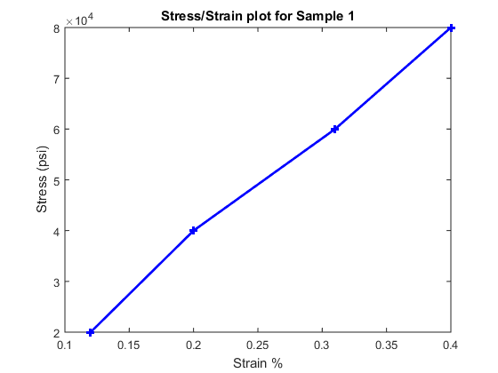

Representing Structured Data with Classes
Objects as Data Structures
This example defines a class for storing data with a specific structure. Using a consistent structure for data storage makes it easier to create functions that operate on the data. A MATLAB®
struct with field names describing the particular data element is a useful way to organize data. However, a class can define both the data storage (properties) and operations that you can perform on that data (methods). This example illustrates these advantages.
Background for the Example
For this example, the data represents tensile stress/strain measurements. These data are used to calculate the elastic modulus of various materials. In simple terms, stress is the force applied to a material and strain is the resulting deformation. Their ratio defines a characteristic of the material. While this approach is an over simplification of the process, it suffices for this example.
Structure of the Data
This table describes the structure of the data.
Data | Description |
|---|---|
|
|
| Number of a particular test sample |
| Vector of numbers representing the stress applied to the sample during the test. |
| Vector of numbers representing the strain at the corresponding values of the applied stress. |
| Number defining an elastic modulus of the material under test, which is calculated from the stress and strain data |
The TensileData Class
This example begins with a simple implementation of the class and builds on this implementation to illustrate how features enhance the usefulness of the class.
The first version of the class provides only data storage. The class defines a property for each of the required data elements.
classdef TensileData properties Material SampleNumber Stress Strain Modulus end end
Create an Instance and Assign Data
The following statements create a TensileData object and assign data to it:
td = TensileData;
td.Material = 'Carbon Steel';
td.SampleNumber = 001;
td.Stress = [2e4 4e4 6e4 8e4];
td.Strain = [.12 .20 .31 .40];
td.Modulus = mean(td.Stress./td.Strain);
Advantages of a Class vs. a Structure
Treat the TensileData object (td in the previous statements) much as you would any MATLAB structure. However, defining a specialized data structure as a class has advantages over using a general-purpose data structure, like a MATLAB
struct:
Users cannot accidentally misspell a field name without getting an error. For example, typing the following:
td.Modulus = ...
would simply add a field to a structure. However, it returns an error when
tdis an instance of theTensileDataclass.A class is easy to reuse. Once you have defined the class, you can easily extend it with subclasses that add new properties.
A class is easy to identify. A class has a name so that you can identify objects with the
whosandclassfunctions and the Workspace panel. The class name makes it easy to refer to records with a meaningful name.A class can validate individual field values when assigned, including class or value.
A class can restrict access to fields, for example, allowing a particular field to be read, but not changed.
Restrict Properties to Specific Values
Restrict properties to specific values by defining a property set access method. MATLAB calls the set access method whenever setting a value for a property.
Material Property Set Function
The Material property set method restricts the assignment of the property to one of the following strings: aluminum, stainless steel, or carbon steel.
Add this function definition to the methods block.
classdef TensileData properties Material SampleNumber Stress Strain Modulus end methods function obj = set.Material(obj,material) if (strcmpi(material,'aluminum') ||... strcmpi(material,'stainless steel') ||... strcmpi(material,'carbon steel')) obj.Material = material; else error('Invalid Material') end end end end
When there is an attempt to set the Material property, MATLAB calls the set.Material method before setting the property value.
If the value matches the acceptable values, the function set the property to that value. The code within set method can access the property directly to avoid calling the property set method recursively.
For example:
td = TensileData;
td.Material = 'brass';Error using TensileData/set.Material Invalid Material
Simplifying the Interface with a Constructor
Simplify the interface to the TensileData class by adding a constructor that:
Enables you to pass the data as arguments to the constructor
Assigns values to properties
The constructor is a method having the same name as the class.
methods function td = TensileData(material,samplenum,stress,strain) if nargin > 0 td.Material = material; td.SampleNumber = samplenum; td.Stress = stress; td.Strain = strain; end end end
Create a TensileData object fully populated with data using the following statement:
td = TensileData('carbon steel',1,... [2e4 4e4 6e4 8e4],... [.12 .20 .31 .40]);
Calculate Data on Demand
If the value of a property depends on the values of other properties, define that property using the Dependent attribute. MATLAB does not store the values of dependent properties. The dependent property get method determines the property value when the property is accessed. Access can occur when displaying object properties or as the result of an explicit query.
Calculating Modulus
TensileData objects do not store the value of the Modulus property. The constructor does not have an input argument for the value of the Modulus property. The value of the Modulus:
Is calculated from the
StressandStrainproperty valuesMust change if the value of the
StressorStrainproperty changes
Therefore, it is better to calculate the value of the Modulus property only when its value is requested. Use a property get access method to calculate the value of the Modulus.
Modulus Property Get Method
The Modulus property depends on Stress and Strain, so its Dependent attribute is true. Place the Modulus property in a separate properties block and set the Dependent attribute.
The get.Modulus method calculates and returns the value of the Modulus property.
properties (Dependent)
Modulus
endDefine the property get method in a methods block using only default attributes.
methods function modulus = get.Modulus(obj) ind = find(obj.Strain > 0); modulus = mean(obj.Stress(ind)./obj.Strain(ind)); end end
This method calculates the average ratio of stress to strain data after eliminating zeros in the denominator data.
MATLAB calls the get.Modulus method when the property is queried. For example,
td = TensileData('carbon steel',1,... [2e4 4e4 6e4 8e4],... [.12 .20 .31 .40]); td.Modulus
ans = 1.9005e+005
Modulus Property Set Method
To set the value of a Dependent property, the class must implement a property set method. There is no need to allow explicit setting of the Modulus property. However, a set method enables you to provide a customized error message. The Modulus set method references the current property value and then returns an error:
methods function obj = set.Modulus(obj,~) fprintf('%s%d\n','Modulus is: ',obj.Modulus) error('You cannot set the Modulus property'); end end
Displaying TensileData Objects
The TensileData class overloads the disp method. This method controls object display in the command window.
The disp method displays the value of the Material, SampleNumber, and Modulus properties. It does not display the Stress and Strain property data. These properties contain raw data that is not easily viewed in the command window.
The disp method uses fprintf to display formatted text in the command window:
methods function disp(td) fprintf(1,... 'Material: %s\nSample Number: %g\nModulus: %1.5g\n',... td.Material,td.SampleNumber,td.Modulus); end end
Method to Plot Stress vs. Strain
It is useful to view a graph of the stress/strain data to determine the behavior of the material over a range of applied tension. The TensileData class overloads the MATLAB
plot function.
The plot method creates a linear graph of the stress versus strain data and adds a title and axis labels to produce a standardized graph for the tensile data records:
methods function plot(td,varargin) plot(td.Strain,td.Stress,varargin{:}) title(['Stress/Strain plot for Sample',... num2str(td.SampleNumber)]) ylabel('Stress (psi)') xlabel('Strain %') end end
The first argument to this method is a TensileData object, which contains the data.
The method passes a variable list of arguments (varargin) directly to the built-in plot function. The TensileData
plot method allows you to pass line specifier arguments or property name-value pairs.
For example:
td = TensileData('carbon steel',1,... [2e4 4e4 6e4 8e4],[.12 .20 .31 .40]); plot(td,'-+b','LineWidth',2)

TensileData Class Synopsis
| Example Code | Discussion |
|---|---|
classdef TensileData | Value class enables independent copies of object. For more information, see Comparison of Handle and Value Classes |
properties
Material
SampleNumber
Stress
Strain
end
| |
properties (Dependent)
Modulus
end | Calculate For general information, see Get and Set Methods for Dependent Properties |
methods | For general information about methods, see Ordinary Methods |
function td = TensileData(material,samplenum,... stress,strain) if nargin > 0 td.Material = material; td.SampleNumber = samplenum; td.Stress = stress; td.Strain = strain; end end | For information about this code, see Simplifying the Interface with a Constructor. For general information about constructors, see Class Constructor Methods |
function obj = set.Material(obj,material) if (strcmpi(material,'aluminum') ||... strcmpi(material,'stainless steel') ||... strcmpi(material,'carbon steel')) obj.Material = material; else error('Invalid Material') end end | Restrict possible values for For information about this code, see Restrict Properties to Specific Values. For general information about property set methods, see Property Get and Set Methods. |
function m = get.Modulus(obj) ind = find(obj.Strain > 0); m = mean(obj.Stress(ind)./obj.Strain(ind)); end | Calculate For information about this code, see Modulus Property Get Method. For general information about property get methods, see Property Get and Set Methods. |
function obj = set.Modulus(obj,~) fprintf('%s%d\n','Modulus is: ',obj.Modulus) error('You cannot set Modulus property'); end | Add set method for For general information about property set methods, see Property Get and Set Methods. |
function disp(td) fprintf(1,'Material: %s\nSample Number: %g\nModulus: %1.5g\n',... td.Material,td.SampleNumber,td.Modulus) end | Overload For information about this code, see Displaying TensileData Objects For general information about overloading disp, see Overloading the disp Function |
function plot(td,varargin) plot(td.Strain,td.Stress,varargin{:}) title(['Stress/Strain plot for Sample',... num2str(td.SampleNumber)]) ylabel('Stress (psi)') xlabel('Strain %') end | Overload |
end end |
|